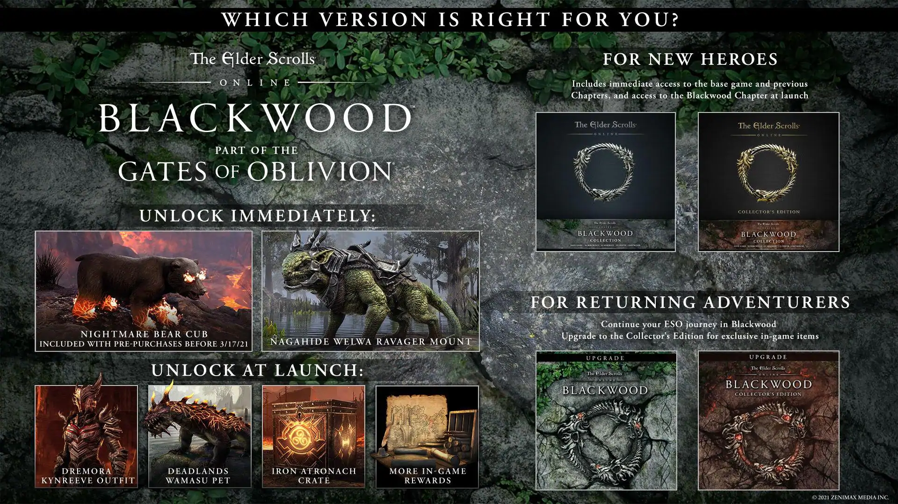

If you would like to put your own build details on you can with out using youtube by clicking on the link at the bottom of the page you will be taken to the elder scrolls academy were you are able to write in your build.
This is an upto date map of Tamriel with more lands to be created for years to come.

This is the latest dlc for ELDER SCROLS ONLINE
You can write or read any ideas, skills, or solutions you have or any one has as well as check for the new updates or updates to come also you can find what date mantiance will be, here is a link to the forums